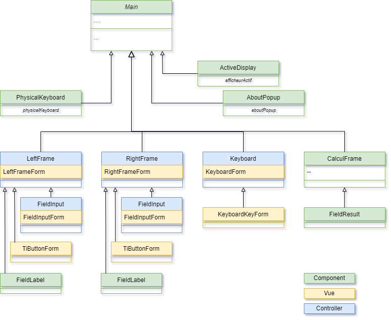
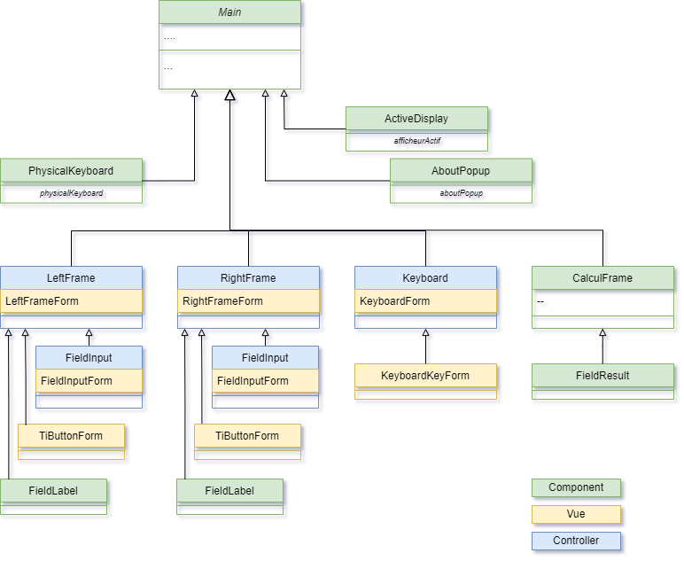

Main QML Type
Fenêtre principale. More...
| Inherits: |
Detailed Description
La fenêtre principale contient 3 zones: QTiCalcul::LeftFrame, CalculFrame and RightFrame

Fenêtre principale. More...
| Inherits: |
La fenêtre principale contient 3 zones: QTiCalcul::LeftFrame, CalculFrame and RightFrame
